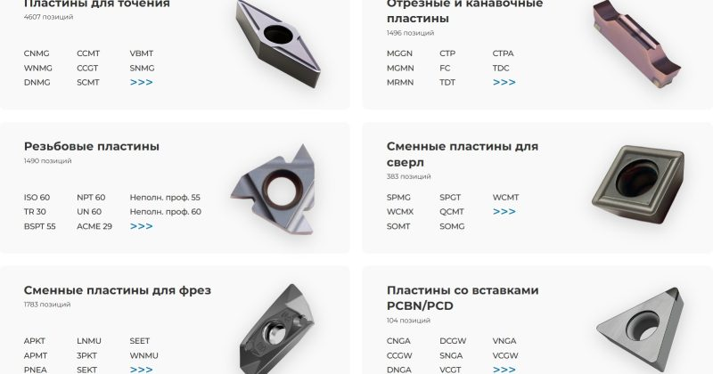

Расшифровка маркировки пластин для токарных резцов: как читать артикул и выбирать правильную пластину
Если вы работаете с токарным станком, будь то на производстве или в собственной мастерской, вы наверняка сталкивались с ситуацией, когда нужно заменить изношенную пластину, но артикул на упаковке или в каталоге кажется сплошным набором букв и цифр. Как расшифровать маркировку пластины? Что означают буквы C, N, M, G и цифры 12, 04, 08? В этой статье мы подробно разберем структуру обозначения токарных пластин по международному стандарту ISO 1832, чтобы вы могли уверенно подбирать инструмент без ошибок.
Почему важно понимать маркировку?Правильно подобранная пластина — это залог:
Высокой точности обработки.
Долгого срока службы режущего инструмента.
Экономии времени и денег на замену.
Безопасности при работе на станке.
Знание расшифровки позволяет не просто купить «похожую» пластину, а выбрать точно ту, которая подходит под вашу задачу — будь то черновая обработка стали, чистовая резка алюминия или обработка нержавеющей стали.
Структура маркировки: 8 ключевых элементовЛюбой артикул токарной пластины состоит из 8 символов (иногда с дополнительными буквами). Разберем их по порядку на примере: CNMG 120408 MP.
Форма пластины (буква)Первая буква обозначает геометрическую форму пластины. Это...